O primeiro pacote desenvolvido para filogenia no foi o ape, lançado em 2002. Nele, a classe phylo, utilizando o sistema S3, foi implementada. Essa classe acabou sendo adotada pela maioria dos pacotes que foram lançados em seguida, e se tornou um padrão.
Posteriormente, em 2009, a classe phylo4d utilizando o sistema S4 foi implementada no pacote phylobase.
Atualmente essas são as duas principais classes que armazenam árvores filogenéticas e outros dados associados.
Não deixe de conferir o site do CRAN, que traz um resumo dos principais pacotes desenvolvidos para análises filogenética: [https://cran.r-project.org/web/views/Phylogenetics.html].
Escrevendo árvores a partir de uma cadeia de texto
Notação parentética e o arquivo Newick
Foi adotado em 26 de junho de 1986 numa reunião informal convocada por Joe Felsenstein a membros do comitê durante as reuniões da Sociedade para o Estudo da Evolução em Durham. James Archie, William H E Day Wayne Maddison Christopher Meacham F. James Rohlf e David Swofford.
A razão do nome é que a segunda e última sessão do comitê se reuniu no restaurante Newick’s Lobster House em Dover, New Hampshire, EUA.
A representação de árvores foi desenvolvida por Christopher Meacham em 1984 para os programas de plotagem de árvores que ele escreveu para o PHYLIP.
Vamos escrever a árvore a partir de uma cadeia de texto (string):
Vamos aprender o passo-a-passo para criar árvores filogenéticas. Para criá-la, comece pelo final da árvore. Vamos usar a árvore filogenética das Monocotiledôneas como exemplo. Observe a construção da árvore passo-a-passo:
Escrevendo árvores através da notação parentética:
“(Zingiberales, Commelinales);” “((Zingiberales, Commelinales), Poales);” “(((Zingiberales, Commelinales), Poales), Arecales);” “((((Zingiberales, Commelinales), Poales), Arecales),(Asparagales, Petrosaviales));” “(((((Zingiberales, Commelinales), Poales), Arecales),(Asparagales, Petrosaviales)), Liliales);” “((((((Zingiberales, Commelinales), Poales), Arecales),(Asparagales, Petrosaviales)), Liliales),(Pandanales, Dioscoriales));” “(((((((Zingiberales, Commelinales), Poales), Arecales),(Asparagales, Petrosaviales)), Liliales),(Pandanales, Dioscoriales)), Alismatales);” “((((((((Zingiberales, Commelinales), Poales), Arecales),(Asparagales, Petrosaviales)),Liliales),(Pandanales, Dioscoriales)), Alismatales), Acorales);” Execute cada bloco no console R, para exibir as topologias, uma de cada vez:
Importante saber que árvores importadas como classe S3. Primeiro, apenas uma árvore pode ser armazenada como um objeto classe S3. E apenas a topologia, o comprimento dos ramos e os nomes dos terminais são importados. Lembre-se que para acessar instâncias de objetos S3 é utilizado o operator cifrão “$”.
Um objeto de classe phylo é uma lista com os seguintes componentes:
Edge a two-column matrix where each row represents a branch (or edge) of the tree; the nodes and the tips are symbolized with integers; the n tips are numbered from 1 to n, and the m (internal) nodes from n+1 to n+m (the root being n + 1).
tip.label a vector of mode character giving the labels of the tips; the order of these labels corresponds to the integers 1 to n in edge.
Nnode an integer value giving the number of nodes in the tree (m).
edge.length (opcional) a numeric vector giving the lengths of the branches given by edge.
node.label (opcional) a vector of mode character giving the labels of the nodes (ordered in the same way than tip.label).
root.edge (optional) a numeric value giving the length of the branch at the root if it exists.
Classe phylo4 e phylo4d (S4)
Por outro lado, inúmeras árvores podem ser armazenadas como um objeto de classe S4. Além de guardar as mesmas informações dos objetos S3, também pode armazenar outros dados, tais quais o suporte dos ramos entre outras informações sobre os ramos, e caracteres específicos dos terminais. Para acessar as instâncias de objetos S4 utiliza-se o operator arroba “@”. Ambos os operatores são usados para acessar as instâncias de objetos S4, na ordem @ e $.
A classe phylo4 armazena apenas árvores, enquanto a classe phylo4d armazena tanto árvores quanto outros dados associados, como um dataframe contendo dados sobbre os ramos e terminais.
***************************************************************
* Note: *
* force.ultrametric does not include a formal method to *
* ultrametricize a tree & should only be used to coerce *
* a phylogeny that fails is.ultramtric due to rounding -- *
* not as a substitute for formal rate-smoothing methods. *
***************************************************************
tree <-extract.clade(phy = apg.tree, node ="lamiales")plot(tree)nodelabels(tree$node.label, frame ="none", cex =0.7)
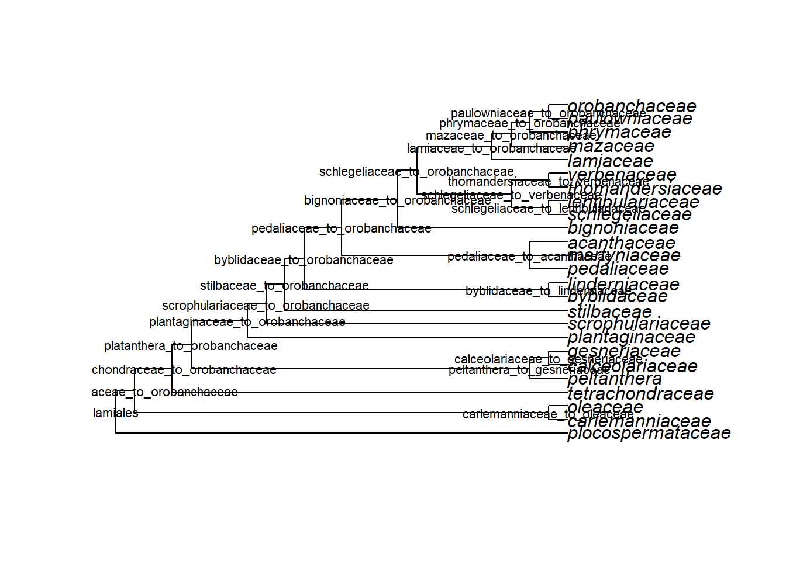
Vamos descobrir como localizar certa string no conjunto de rótulos dos nós.
Vamos procurar o: Clado das Fixadoras de Nitrogênio (clado CFN) FABA-ROSA-CUCU-FAGA
nome <-"nitrogen"index_of_clades_found <-grep(nome, apg.tree$node.label)apg.tree$node.label[index_of_clades_found]
[1] "nitrogenfixing_to_COM" "nitrogenfixing"
Extraia o clado:
tree <-extract.clade(phy = apg.tree, node ="nitrogenfixing")plot(tree)nodelabels(tree$node.label, frame ="none", cex =0.7)
Personalizando o estilo da árvore
Agora que temos um conjunto de objetos de classe phylo e phylo4, vamos aprender a alterar o design das árvores utilizando alguns dos principais pacotes para filogenia. Vamos conhecer um pacote de cada vez.
Perceba que o pacote ape implementou um método para a função plot() do pacote graphics, o plot.phylo(). Então, desde que o objeto seja de classe phylo ou phylo4 (ou ainda phylo4d) não se faz necessário digitar “.phylo” depois de plot:
plot(plants.tree, type ="phylogram") # Default
plot(plants.tree, type ="cladogram")
plot(plants.tree, type ="fan")
plot(plants.tree, type ="radial")
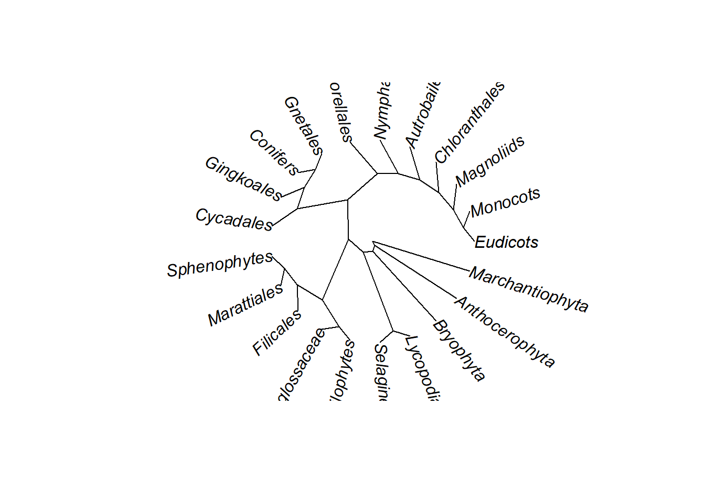
Para gerar uma árvore não-enraizada, utilize a função unroot() para retirar a raiz da árvore, e use o argumento type = “unrooted” e lab4ut = “axial” da função plot.phylo():
plot(unroot(plants.tree), type ="unrooted", lab4ut ="axial")
Altere a direção da árvore com argumento direction:
plot(Monocots, direction ="leftwards")
plot(Monocots, direction ="upwards")
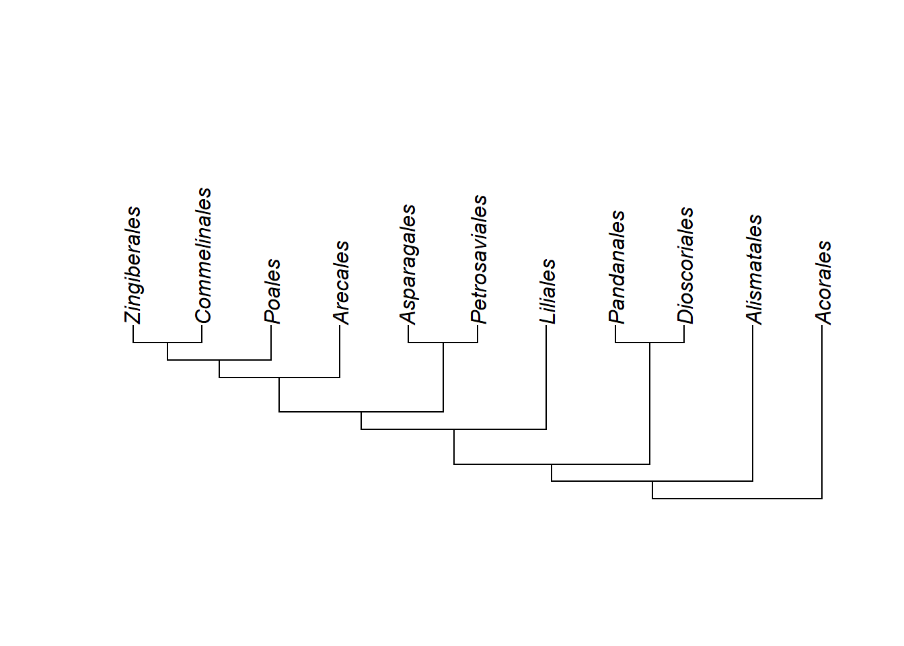
plot(Monocots, direction ="downwards")
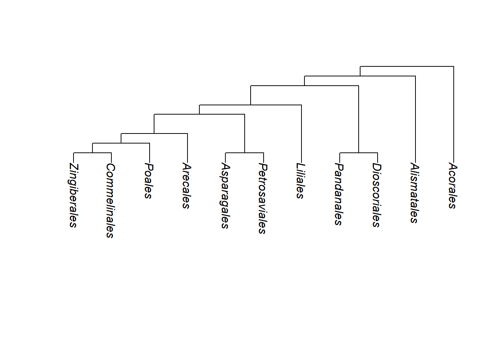
Gire o ângulo da árvore com o argumento rotate.tree:
plot(Monocots, type ="fan")
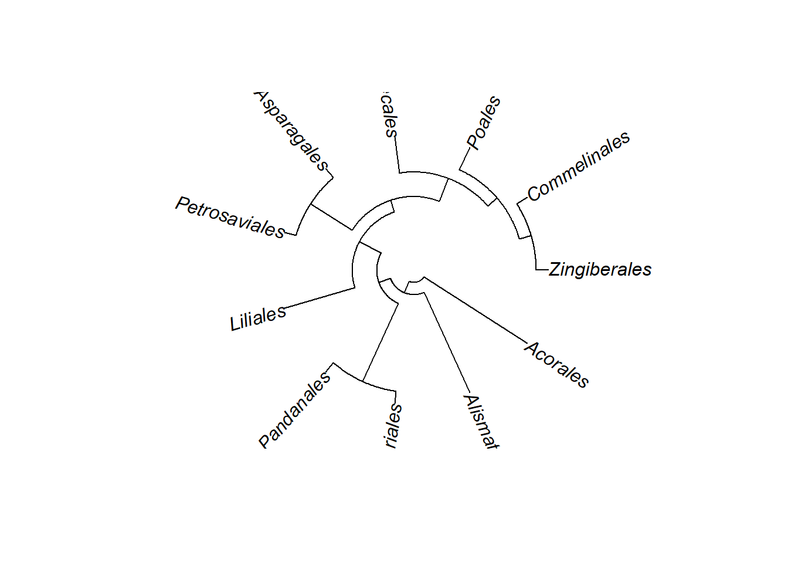
plot(Monocots, type ="fan", rotate.tree =50)
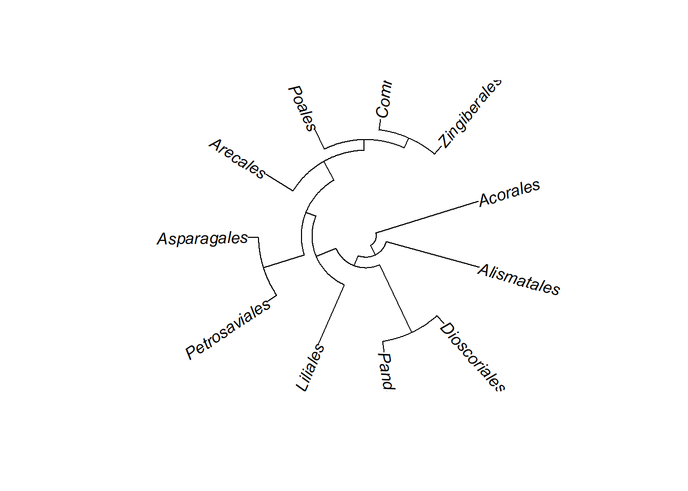
Abra o ângulo da árvore com argumento open.angle:
plot(plants.tree, type ="fan")
plot(plants.tree, type ="fan", open.angle =180)
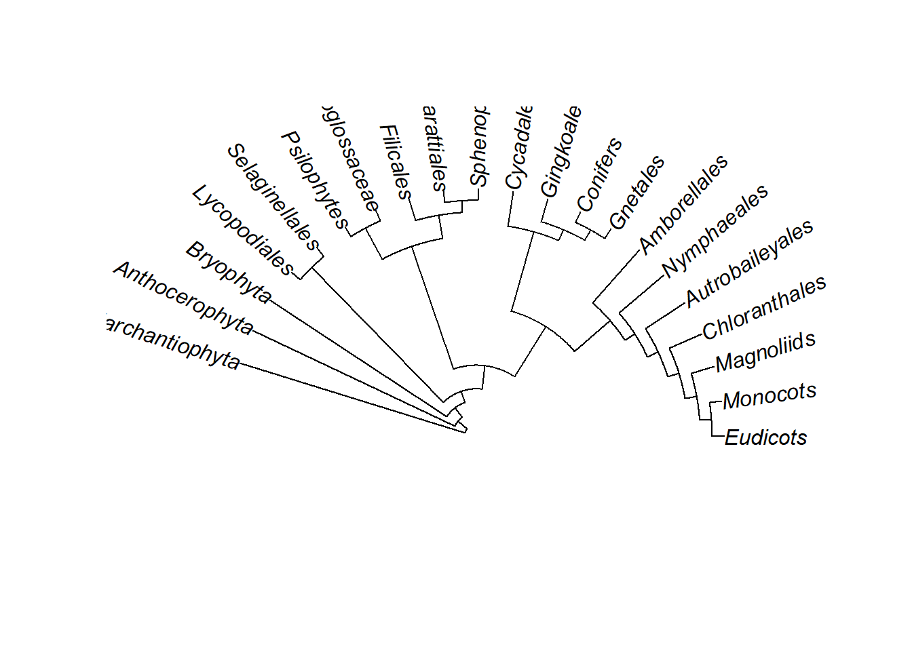
Altere a direção os nomes dos terminais (tip.label) com o argumento lab4ut como “horizontal”:
plot(Monocots, type ="fan", lab4ut="horizontal")
Altere o tamanho da árvore com os argumentos x.lim e y.lim:
plot(plants.tree, x.lim =25, y.lim =22)
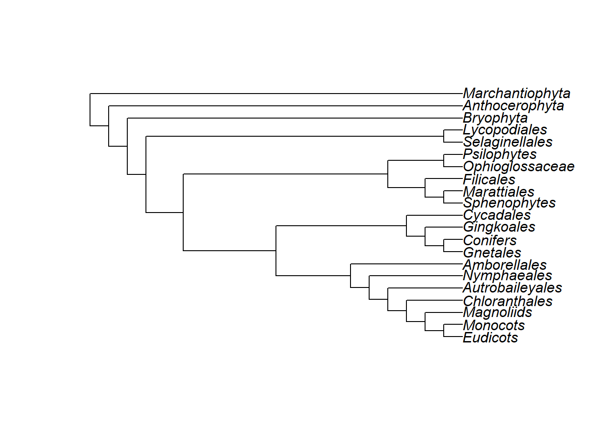
plot(plants.tree, x.lim =100, y.lim =22)
plot(plants.tree, x.lim =150, y.lim =22)
plot(plants.tree, x.lim =200, y.lim =30)
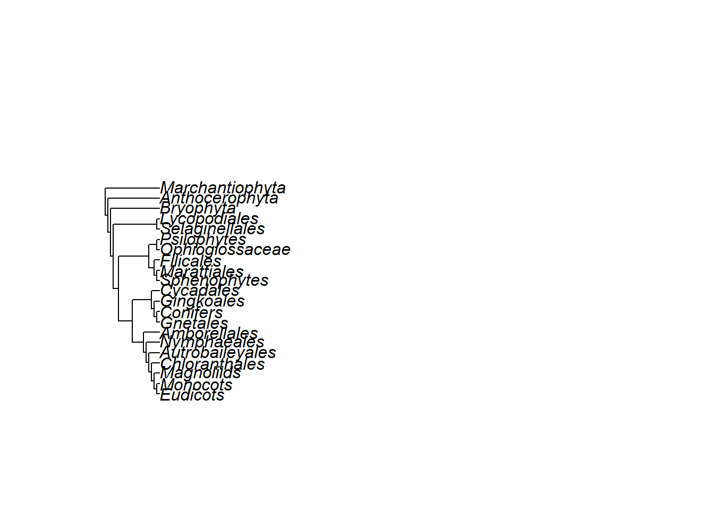
plot(plants.tree, x.lim =250, y.lim =30)
Para executar diversas alterações, mudanças de estilos e anotações na árvore, é preciso saber qual o número associado a cada ramo e aos terminais. Para descobrir esses números usaremos as funções edgelabels(), tiplabels e nodelabels():
plot(Monocots)edgelabels()tiplabels()
plot(Monocots)nodelabels()
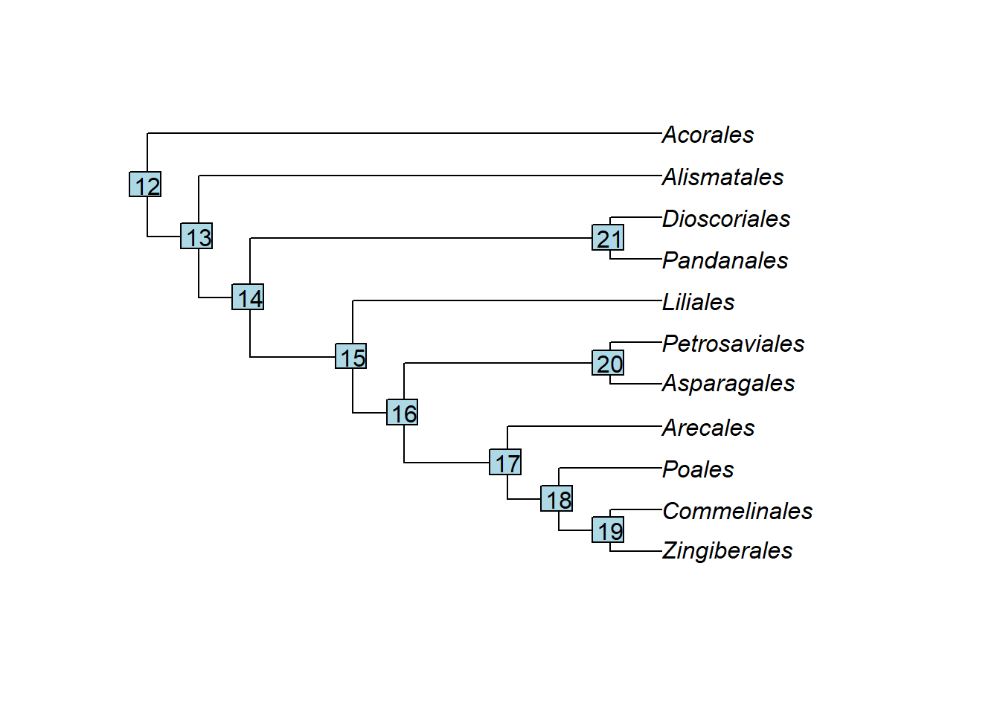
Ramos
Altere a espessura dos ramos da árvore com o argumento edge.width: (default: 1)
plot(plants.tree, edge.width =3)
Altere o formato da linha correspondente aos ramos com o argumento edge.lty (de 1 a 6): (Default: 1)
plot(plants.tree, edge.lty =2)
Altere a cor dos ramos da árvore com argumento edge.color: (Default: 1)
A função def() pode ser utilizada com qualquer outro argumento da função plot.phylo(), mas teremos de indicar o estado de cada um dos nós nodelabels). Vamos repetir o código acima, no qual usamos a função def(), mas vamos incluir mais uma definição, a da espessura dos ramos. Perceba que ao criar o objeto def2 associamos a todos os números do nodelabels o número “1”, exceto os números 38, 39 e 40 que estão associados ao “3”:
Plote diferentes tipos de símbolos nos ramos da árvore com a função edgelabels(). Escolha o tipo de símbolo com o argumento pch, equivalente à função points do pacote graphics (veja essa função para descobrir os códigos dos símbolos, valores vão de 0 a 25). O argumento col altera a cor do símbolo. O argumento cex define o tamanho do símbolo (Default: 0). O argumento adj funciona como um eixo x e y para posição do símbolo:
Aumente a distância entre os nomes dos terminais (tip.label) e a árvore com o argumento label.offset: (experimente também outros valores diferentes de 1. (Default: 0)
plot(Monocots, label.offset =1)
Altere a fonte dos terminais com argumento font (1: sem formato, 2: negrito, 3: italic, 4: negrito e itálico, etc): (Default: 3)
plot(Monocots, font =4)
Altere o tamanho da fonte dos terminais com argumento cex: (Default: 1)
plot(Monocots, cex =0.5)
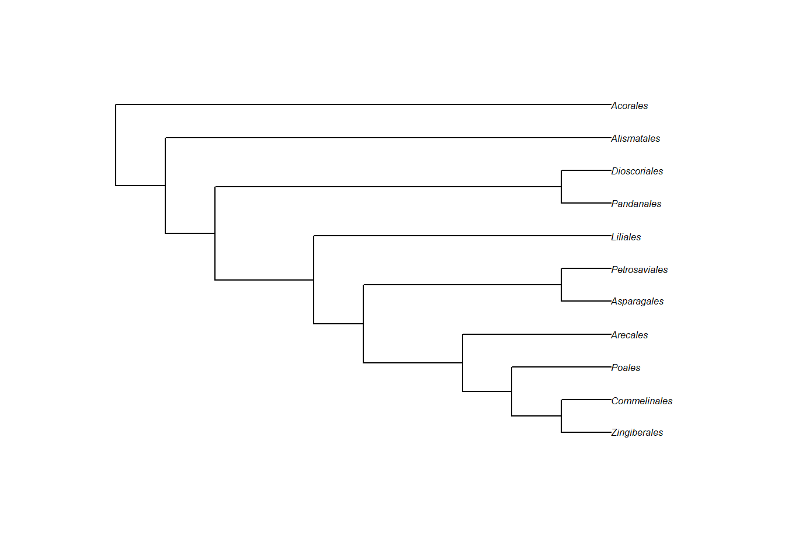
Altere a justificação dos nomes dos terminais com argumento adj (de 0 a 1): (Default: 0)
plot(Monocots, adj =0.5)
plot(Monocots, adj =1)
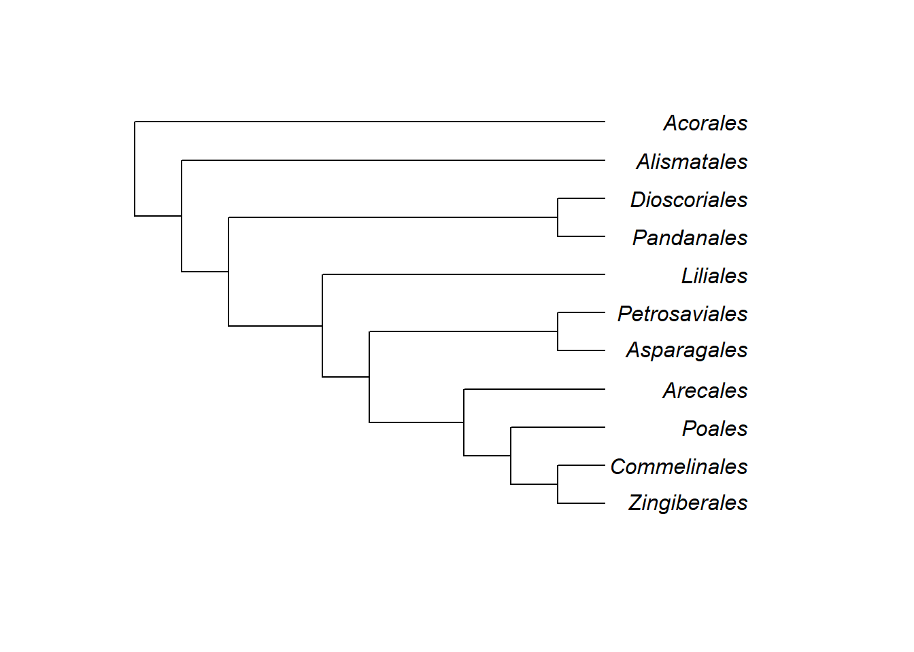
Altere a inclinação dos nomes dos terminais com argumento srt: (Default: 0)
plot(plants.tree, srt =25)
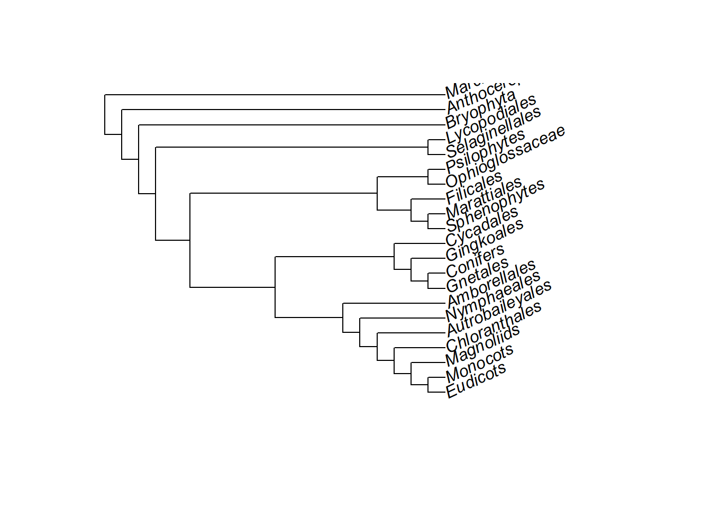
Altere a cor da fonte do terminais com argumento tip.color: (Default: 1)
plot(Monocots, tip.color ="red")
plot(Monocots, tip.color =0) # 0 = branco
plot(Monocots, tip.color =4)
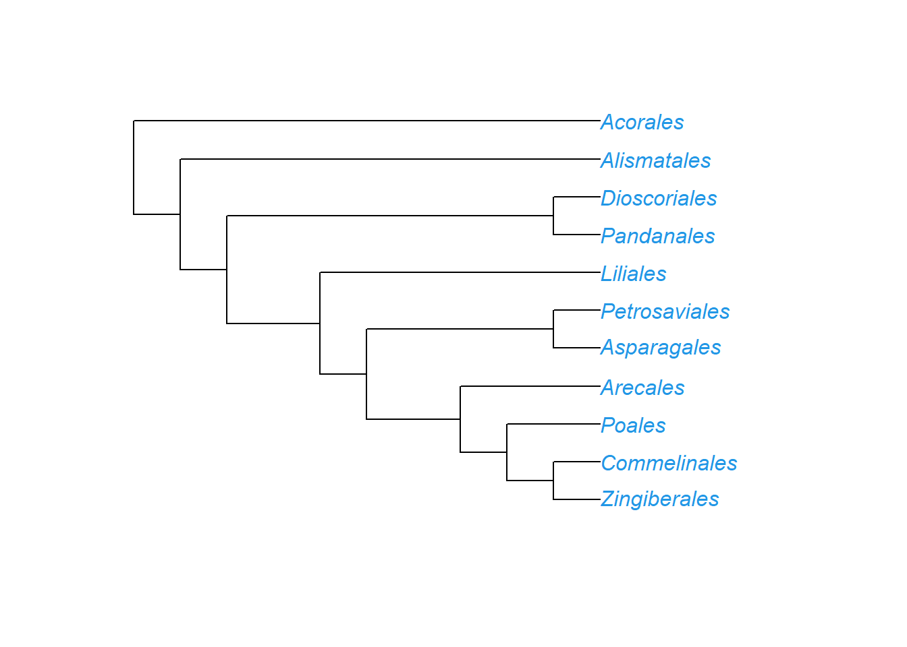
Vamos usar a função def() para especificar as cores dos nomes dos terminais, e também, vamos alterar a fonte:
Inclua os nomes (tiplabels) apenas para determinados terminais:
Primeiro, selecione os números dos terminais:
plot(plants.tree)tiplabels()
i <-c(4, 10, 17)
Depois, vamos plotar a árvore sem os nomes dos terminais (show.tip.label = FALSE), introduzir um recuo com o argumento x.lim, e plotar os nomes dos terminais com a função tiplabels():
plot(plants.tree, show.tip.label =FALSE, x.lim =30)tiplabels(plants.tree$tip.label[i], i, adj =0)
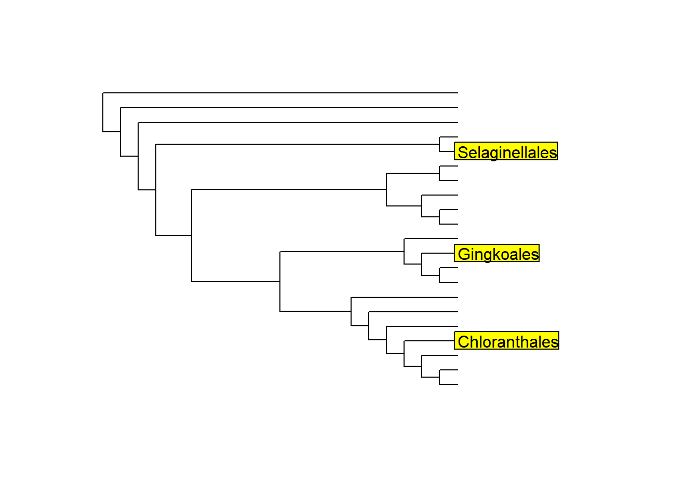
Retire o quadro em volta do nome com o argumento frame = “none”:
plot(plants.tree, show.tip.label =FALSE, x.lim =30)tiplabels(plants.tree$tip.label[i], i, adj =0, frame ="none")
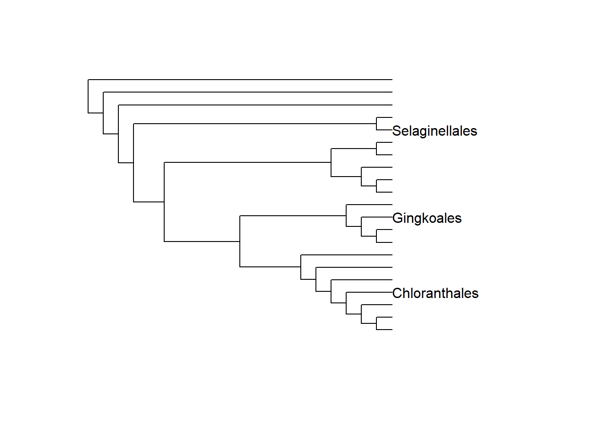
Plote diferentes tipos de símbolos terminais com a função tiplabels(). Com o argumento label.offset, afaste um pouco os nomes dos terminais da árvore:
Use também os argumentos cex, para aumentar ou diminuir o tamanho do símbolo, e adj, para afastar o símbolo na horizontal, da função tiplabels(); também altere a cor do fundo do símbolo com o argumento bg:
Plote um símbolo nos terminais interativamente na área de plotagem: (Não esqueça de retirar o símbolo # da frente de cada linha)
# f <- function(col) {# o <- identify(plants.tree)# tiplabels(tip=o$tips, pch = 19, col = col)# }# f("red") # Clique no terminal para adicionar o símbolo# f("green") # Faça o mesmo
Nós
Plote os números associados aos nós com a função nodelabels():
plot(plants.tree)nodelabels()
Enraizar uma árvore com função root():
plot(root(plants.tree, 4)) # Enraizando o nó número 4.
Warning in min(x): no non-missing arguments to min; returning Inf
Warning in max(x): no non-missing arguments to max; returning -Inf
Rotacionar uma árvore com função rotate():
plot(plants.tree)
plot(ape::rotate(plants.tree, 25))
# OBS: O comando 'ape::rotate' é um chamamento específico da função rotate do# pacote ape. Portanto, os operadores '::' vindos após o nome de um pacote,# define a exata função do pacote. Isso é especialmente útil para não precisar# carregar o pacote inteiro ou quando existe duplicidade de nome de funções# entre pacotes distintos.
Plote um símbolo nos nós interativamente: (Retire os símbolos de # para rodar as linhas de comando)
# f2 <- function(col) {# o <- identify(Monocots)# tiplabels(node=o$nodes, pch = 19, col = col)# }# f2("yellow") # Clique no terminal para adicionar o símbolo# f2("blue") # Faça o mesmo
Altere o tipo de árvore com o argumento type (phylogram [Default]; fan; cladogram); o tamanho da fonte com o argumento fsize; e o estilo da fonte com ftype (reg = regular [default]; i = itálico; b = negrito; bi = itálico e negrito):
plotTree(plants.tree, type ="fan", fsize =1, ftype ="i", offset=1)
Plote uma árvore com as bordas arredondadas com a função roundPhylogram:
roundPhylogram(plants.tree)
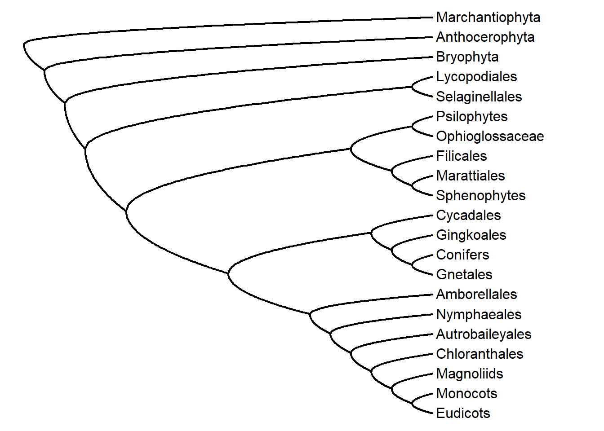
Aplicar organização em escada nos clados com a função ladderize():
plot(ladderize(plants.tree))
plot(ladderize(plants.tree, FALSE))
Rotacione determinados nós com a função rotateNodes():
Compare a topologia das árvores com a função all.equal():
# A árvore rotacionada é igual à original?all.equal(Monocots, rt.all)
[1] TRUE
# A árvore reenraizada é igual à original?all.equal(Monocots, rr.13)
[1] FALSE
# As árvores original e reenraizada tornadas não-enraizadas são iguais:all.equal(unroot(Monocots), unroot(rr.13))
[1] TRUE
Corte uma árvore ao meio, plotando-a em duas colunas, com função splitplotTree. A função rcoal gera árvores aleatórias com número determinado de terminais:
trees <-rcoal(50)splitplotTree(trees)
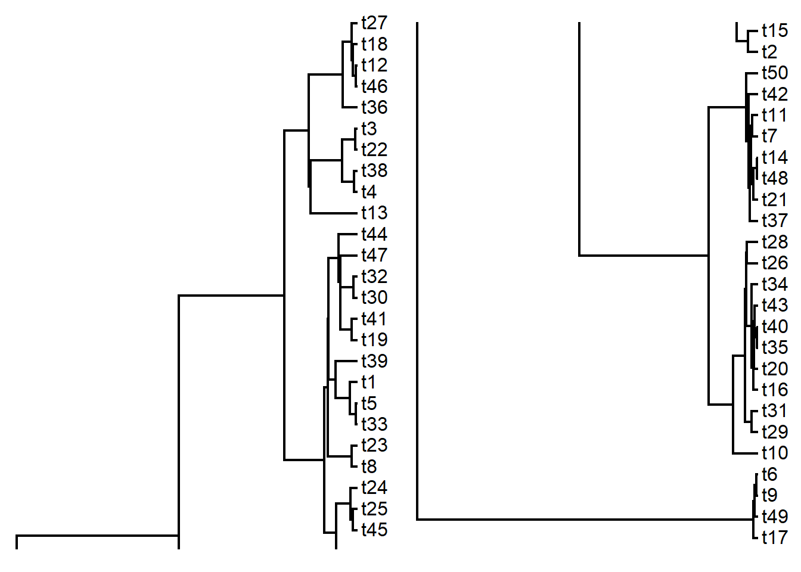
Ramos
Altere a espessura dos ramos com o argumento lwd:
plotTree(Monocots, lwd =3)
Terminais
Plote a árvore sem os terminais:
plotTree(plants.tree, ftype ="off")
Afaste os nomes dos terminais da árvore com o argumento offset:
plotTree(plants.tree, offset =1)
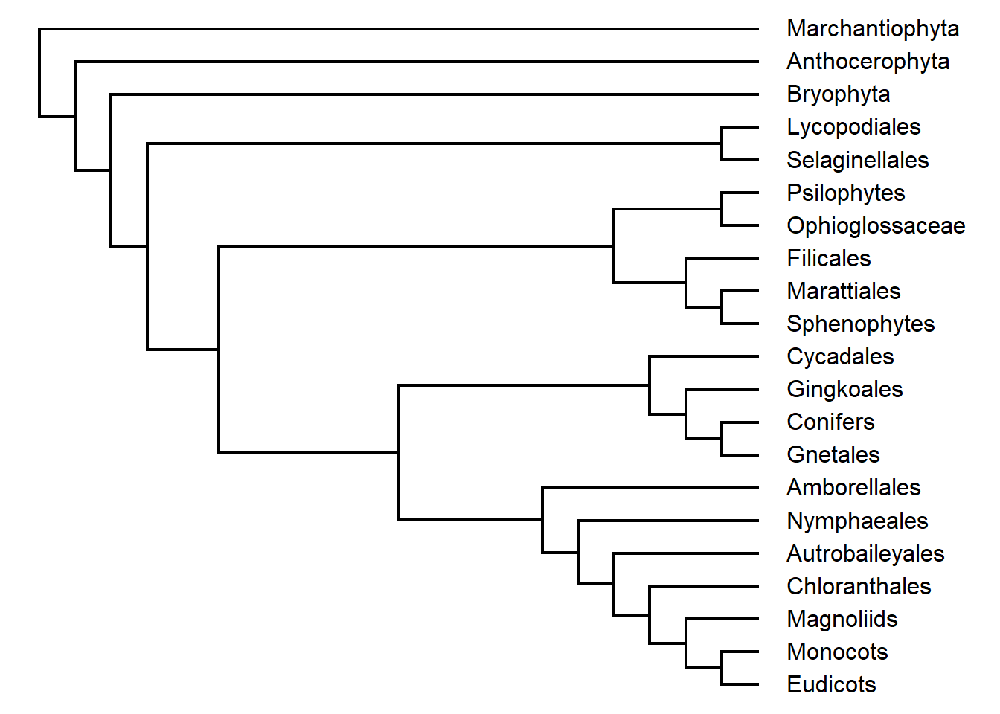
Descobra o número dos terminais:
species <-c("Magnoliids", "Gingkoales")ts <-sapply(species, grep, plants.tree$tip.label)ts
Magnoliids Gingkoales
3 10
plants.tree$tip.label[ts]
[1] "Magnoliids" "Gingkoales"
Adicione uma seta em determinados terminais:
plotTree(plants.tree, type ="fan", offset=1)add.arrow(plants.tree, tip = ts, arrl =0.3, hedl =0.1)
Retire terminais determinados terminais:
drop.species <-drop.tip(plants.tree, species)plotTree(drop.species, type ="fan", ftype ="i", offset=1)
Warning: The following aesthetics were dropped during statistical transformation: node
and parent.
ℹ This can happen when ggplot fails to infer the correct grouping structure in
the data.
ℹ Did you forget to specify a `group` aesthetic or to convert a numerical
variable into a factor?
The following aesthetics were dropped during statistical transformation: node
and parent.
ℹ This can happen when ggplot fails to infer the correct grouping structure in
the data.
ℹ Did you forget to specify a `group` aesthetic or to convert a numerical
variable into a factor?
The following aesthetics were dropped during statistical transformation: node
and parent.
ℹ This can happen when ggplot fails to infer the correct grouping structure in
the data.
ℹ Did you forget to specify a `group` aesthetic or to convert a numerical
variable into a factor?
The following aesthetics were dropped during statistical transformation: node
and parent.
ℹ This can happen when ggplot fails to infer the correct grouping structure in
the data.
ℹ Did you forget to specify a `group` aesthetic or to convert a numerical
variable into a factor?
Altere parâmetros estéticos com argumentos específicos:
Warning: The following aesthetics were dropped during statistical transformation: node
and parent.
ℹ This can happen when ggplot fails to infer the correct grouping structure in
the data.
ℹ Did you forget to specify a `group` aesthetic or to convert a numerical
variable into a factor?
The following aesthetics were dropped during statistical transformation: node
and parent.
ℹ This can happen when ggplot fails to infer the correct grouping structure in
the data.
ℹ Did you forget to specify a `group` aesthetic or to convert a numerical
variable into a factor?
The following aesthetics were dropped during statistical transformation: node
and parent.
ℹ This can happen when ggplot fails to infer the correct grouping structure in
the data.
ℹ Did you forget to specify a `group` aesthetic or to convert a numerical
variable into a factor?
The following aesthetics were dropped during statistical transformation: node
and parent.
ℹ This can happen when ggplot fails to infer the correct grouping structure in
the data.
ℹ Did you forget to specify a `group` aesthetic or to convert a numerical
variable into a factor?
Coloque uma caixa em volta do nome do clado com argumento geom():
Warning: The following aesthetics were dropped during statistical transformation: node
and parent.
ℹ This can happen when ggplot fails to infer the correct grouping structure in
the data.
ℹ Did you forget to specify a `group` aesthetic or to convert a numerical
variable into a factor?
The following aesthetics were dropped during statistical transformation: node
and parent.
ℹ This can happen when ggplot fails to infer the correct grouping structure in
the data.
ℹ Did you forget to specify a `group` aesthetic or to convert a numerical
variable into a factor?
The following aesthetics were dropped during statistical transformation: node
and parent.
ℹ This can happen when ggplot fails to infer the correct grouping structure in
the data.
ℹ Did you forget to specify a `group` aesthetic or to convert a numerical
variable into a factor?
The following aesthetics were dropped during statistical transformation: node
and parent.
ℹ This can happen when ggplot fails to infer the correct grouping structure in
the data.
ℹ Did you forget to specify a `group` aesthetic or to convert a numerical
variable into a factor?
Adicione uma barra com função geom_strip():
ggtree(Monocots) +geom_strip(2, 4, barsize =2, color ='red') +geom_strip(8, 6, barsize =2, color ='blue')
Destaque clados com função geom_hilight():
tree4 <-pbtree(n =50, scale =100)ggtree(tree4, layout="circular") +geom_hilight(node =72, fill ="steelblue", alpha = .6) +geom_hilight(node =91, fill ="darkgreen", alpha = .6)
Destaque clados com função geom_hilight_encircle():
Rotacione interativamente os nós: (Retire o operador # da frente dos comandos)
# p <- ggtree(plants.tree) + geom_tiplab() + coord_cartesian(xlim = c(0, 50), ylim = c(0, 22))# for (i in 1:10) {# p <- p %>% ggtree::rotate(identify(p))# print(p)# }
Rotacione apenas determinados nós-irmãos com a função flip():
Depois de plotar a árvore e alterar seu estilo, personalizando os nomes dos terminais e os ramos (linhas da árvore), vamos aprender a fazer anotações nos nós, ramos e nos terminais, tais como: os valores de suporte dos nós, comprimento dos ramos, plotar símbolos, gráficos de barras, pizzas, etc.
Pacote ape
Ramos
Anotando texto nos ramos:
Vamos plotar etiquetas e textos nos ramos com a função edgelabels(). Com o argumento frame escolha se incluirá uma caixa de texto com formato circular (“circle”), com ângulos retos (“rect”, default), ou sem caixa de texto (“none”). Com o argumento bg pode alterar a cor de fundo da caixa de texto:
Adicionando uma barra de erro nos nós com o método plotTree.errorbars():
Plotando matrizes, data.frames e árvore ao lado da árvore usando R
…
Pacote ape
O pacote ape possui três funções para plotar matrizes, dataframes, e outra árvore ao lado de uma árvore (tanglegram): phydataplot(), ring() e cophyloplot().
Matriz e data.frame
Dados contínuos
Plote diferentes layouts ao lado da árvore:
data <-c(2,3,1,2,7,5,4,10,13,12,11)names(data) <- Monocots$tip.labelplot(Monocots, x.lim =60)phydataplot(data, Monocots, offset =14)
plot(Monocots, x.lim =60)phydataplot(data, Monocots, offset =14, col ="yellow")
co <-c("lightblue", "yellow")co2 <-c("lightgreen", "lightpink")op <-par(mar =rep(0, 4))par(xpd =TRUE, mar = op$mar)plot(ts, "r", cex =0.5)ring(0.1, ts, "r", col =sample(co, size =100, rep =TRUE), offset =0.3)ring(0.1, ts, "r", col =sample(co2, size =100, rep =TRUE), offset =0.5)
Tanglegram
# Gerar 2 árvores aleatórias com 10 terminais com a função rtree(). As árvores# não precisam conter exatamente os mesmos terminais, mas as linhas serão# formadas apenas nos terminais com nomes iguais.tree1 <-rtree(10)tree2 <-rtree(10)# Criação de uma matriz de associação:association <-cbind(tree2$tip.label, tree2$tip.label)cophyloplot(tree1, tree2, assoc = association, length.line =4, space =28, gap =3)
# Rotacionar árvore interativamente com argumento rotate: (Retire o # da frente# do comando) cophyloplot(tree1, tree2, assoc = association, length.line = 4,# space = 28, gap = 3, rotate = TRUE)
Pacote phytools
O pacote phytools possui a função dotTree() e mais três métodos específicos da função plotTree() para plotar círculos, barras, matrizes e boxplots: plotTree.barplot(), plotTree.datamatrix() e plotTree.boxplot():
Círculos
Plote esferas com tamanho diferenciado de acordo com dados contínuos com a função dotTree():
# Vamos obter a árvore e dados do Blog oficial o pacote Phytools:tree <- ape::read.tree("http://www.phytools.org/Cordoba2017/data/tree.tre")x <-as.matrix(read.csv("http://www.phytools.org/Cordoba2017/data/x.csv",row.names =1))[, 1]# Agora plote:dotTree(tree, x, length =10, ftype ="i")
Plote círculos coloridos para representar caracteres discretos:
Teste também uma outra opção implementada no phytools, a o método plotTree.wBars(): [http://blog.phytools.org/2015/04/plottreewbars-with-tip-labels.html]
object <-plotTree.datamatrix(tree, X, sep =0, srt =70, yexp =1.05,fsize =0.8)x <- object$end.x +diff(par()$usr[1:2]) *0.01y <-Ntip(tree)for (i in1:ncol(X)) {text(x, y, colnames(X)[i], pos =4, cex =0.9, offset =0)add.simmap.legend(colors = object$colors[[i]], shape ="square", prompt =FALSE,x = x, y = y -2*strheight("W") *0.9, fsize =0.9) y <- y -1.5*0.9*strheight("W") * (length(object$colors[[i]]) -1) -6}
Boxplots
tree <-pbtree(n =26, tip.label = LETTERS[26:1])# Simule species meansx <-fastBM(tree)# Simule diferentes amostras de cada terminal (5 por terminal):xe <-sampleFrom(x, setNames(rep(0.5, Ntip(tree)), tree$tip.label), setNames(rep(5,Ntip(tree)), tree$tip.label))plotTree.boxplot(tree, xe)
Tanglegram
Gere duas ávores aleatórias com os mesmos terminais:
Crie o objeto de classe cophylo com a função de mesmo nome:
obj <-cophylo(t1, t2)
Rotating nodes to optimize matching...
Done.
Plote o objeto criado com a função plot.cophylo:
plot.cophylo(obj)
Altere parâmetros estéticos com argumentos da função plot.cophylo. Altere a espessura dos ramos da árvore com o argumento lwd. Altere a estética da linha que une os terminais com o argumento link.type = “curved”:
plot.cophylo(obj, lwd =2, link.type ="curved")
Altere o tipo de linha com o argumento link.lty:
plot(obj, link.lty =0)
plot(obj, link.lty =1)
plot(obj, link.lty =2)
plot(obj, link.lty =3)
plot(obj, link.lty =4)
Altere a cor da linha que une os terminais das árvores com o argumento link.col.
plot(obj, link.col ="red")
Aplique uma transparência na cor com a função make.transparent:
Remova os nomes ou altere a fonte dos terminais com o argumento ftype:
plot(obj, ftype ="off")
plot(obj, ftype ="b")
Altere o tamanho da fonte dos terminais com o argumento fsize:
plot(obj, fsize =1.3)
Altere a linha que une a árvore aos terminais. Altere o tipo de linha com o argumento tip.lty (0 = sem linha). Altere a distância entre a árvore e os terminais com o argumento tip.len. Altere a distância entre os terminais de ambas as árvores com o argumento part:
plot(xx, type ="phylogram", asp =1.3, mar =c(0.1, 0.5, 3.1, 0.1))
Veja um exemplo pronto com dados reais (Fig. @ref{fig:Phylo.to.map}):
Escala estratigráfica
Plote a escala estratigráfica, com dados gerados aleatoriamente, com a função geo.legend() [http://blog.phytools.org/2017/05/new-features-in-geolegend-for-adding.html]:
tree <-pbtree(b =0.03, d =0.01, n =200)h <-max(nodeHeights(tree))# Primeiro ajuste a legenda sem plotar a árvore:plotTree(tree, plot =FALSE)obj <-geo.legend(alpha =0.3, cex =1.2, plot = T)
# plote a árvore e a legenda estratigráfica:plotTree(tree, ftype ="off", ylim =c(-0.2*Ntip(tree), Ntip(tree)), lwd =1)geo.legend(leg = obj$leg, colors = obj$colors, cex =1.2)